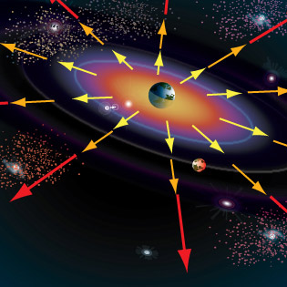

নিবন্ধ 4 পিঁপড়ার দড়াবাজি ও মহাবিশ্বের সম্প্রসারণ

আপনাদের নিশ্চয়ই একিলিস ও কচ্ছপের দৌড় প্রতিযোগিতার কথা মনে থাকার কথা, যেখানে কচ্ছপের অপকৌশল নস্যাৎ করে দিয়ে বীর একিলিস জিতে নিয়েছিল রেস। কাজটা যদিও প্র্যাকটিকেলি বড়ই সহজ ছিল, কিন্তু গণিতের অপপ্রয়োগ খাটিয়ে কচ্ছপ তাত্ত্বিকভাবে জিতে নিতে চেয়েছিল রেসটি।
এবারের লড়াইটিতে প্রাণী আছে একটিই। লড়াই করতে হবে একটি দড়ির সাথে। যে সে দড়ি নয়, সে এক রাবারের দড়ি। প্রতি মুহূর্তে এর দৈর্ঘ্য প্রসারিত হচ্ছে। এমনই এক দড়ির উপর দিয়ে পিঁপড়াটিকে পার হতে হবে।
খুলেই বলা যাক।
শুরুতে দড়ির দৈর্ঘ্য ছিল ১ মিটার (৩ দশমিক ৩ ফুট)। পিঁপড়াটি এই রাবারের দড়িটির উপর দিয়ে প্রতি সেকেন্ডে ১ সেন্টিমিটার বেগে হেঁটে যাচ্ছে। দড়ি যদি স্বাভাবিক থাকতো, তাহলে ১ মিটার তথা ১০০ সেন্টিমিটার পথ পিঁপড়াটি ১০০ সেকেন্ডেই পার হয়ে যেত। তাহলে অবশ্য আর এই লেখাটি লেখা হতো না।
কিন্তু রাবারের দড়িটি প্রতি সেকেন্ডে ১ কিলোমিটার হারে প্রসারিত হয়ে যাচ্ছে। অনেকে চোখ কপালে তুলে ভাবছেন, এই দড়ি পিঁপড়াটি পার হবে কিভাবে? এও কি সম্ভব?
প্রাথমিকভাবে অবশ্য কাজটাকে অসম্ভবই মনে হবে। সহজ কারণ, চলার বেগের চেয়ে যদি পথের দৈর্ঘ্য বড় হয়ে যাবার বেগ বেশি হয় তাহলে আর কিইবা হতে পারে। কিন্তু, পিঁপড়ার পক্ষে কাজটি করা সম্ভব। তাতে কতো সময় লাগবে, তা আমরা পরে দেখবো। আগে দেখি, কিভাবে সম্ভব হবে।
চলা শুরুর পূর্ব মুহূর্তে পিঁপড়ার সামনে পুরো পথ তথা ১০০% দড়ি পড়ে আছে যা তাকে পার হতে হবে। ১ সেকেন্ড পরে দড়ির দৈর্ঘ্য ১ কিলোমিটার প্রসারিত হয়ে গেল। ওদিকে পিঁপড়াও কিন্তু চলেছে। ফলে, আগে যেখানে পথ বাকি ছিল ১০০%, এখন কিন্তু সেই ভগ্নাংশ আরো কমে গেছে। ২য় সেকেন্ডে তার সামনে হিসাব থাকবে, ২ কিলোমিটার পথের মধ্যে ১৯৯৯ মিটার পাড়ি দিতে হবে। দেখুন ১০০% নয় কিন্তু। অবশ্য প্রকৃতপক্ষে আরেকটু কম পাড়ি দিতে হবে। কেন, বলছি একটু পরই।
পরের সেকেন্ডে সে আরো ১ সেন্টিমিটার চলল। দড়িও প্রাসারিত হয়ে গেল আরো এক কিলোমিটার। কিন্তু খেয়াল করার বিষয় হলো দড়িটি শুধু পিঁপড়ার সামনের দিকে প্রসারিত হচ্ছে না, পেছনেও হচ্ছে। ব্যাপারটি যদি এমন হতো যে, দড়ির একেবারে শেষ প্রান্তে ১ কিলোমিটার করে নতুন দড়ি যুক্ত হচ্ছে, তাহলে কিন্তু ভগ্নাংশ মোটেই কমতো না। আজীবন চললেও কোনক্রমেই শেষ হতো না। কিন্তু এক্ষেত্রে পিঁপড়ার সামনে যেমন দড়ি বেড়ে যাচ্ছে, তেমনি বাড়ছে পেছনেও। ফলে, একই সাথে সামনে পড়ে থাকা দূরত্ব যেমন বাড়ছে, তেমনি বাড়ছে ফেলে আসা পথও। আর পিঁপড়া যতোই সামনে এগোচ্ছে, ততোই ফেলে আসা পথের ক্ষেত্রে প্রসারণ বাড়ছে এবং উল্টোভাবে কমে যাচ্ছে সামনে পড়ে থাকা পথের ভগ্নাংশ।
ফলে, এক সময় পিঁপড়াটি সত্যিই দড়িটি পার হয়ে যাবে। কিন্তু একটি শর্ত আছে। প্রাণিটিকে অবশ্যই অনেক অনেক… অনেক দীর্ঘায়ু পেতে হবে। কেননা, এই পথ পাড়ি দিতে তাকে \(2.8 \times 10^{43,429}\) সেকেন্ড পথ চলতে হবে। আপনি চাইলে ২৮ এর পর ৪৩৪২৮ টি শুন্য বসিয়ে দেখতে পারেন সংখ্যাটি কতো বড় হয়। সত্যি কথা হলো, মহাবিশ্বের বর্তমান বয়সও (প্রায় ১৪ বিলিয়ন বছর) কিন্তু এতো হয়নি।
কিন্তু কাজটিকে কেন অসম্ভব মনে হয়? এই কাজটিকে অসম্ভব মনে হবার দুটি কারণ থাকতে পারে।
১। দড়ি বড় হয়ে যাচ্ছে শুনে মনে হচ্ছে দড়ির শেষ প্রান্তে নতুন করে দড়ি যুক্ত হচ্ছে। বাস্তবে সম্পূর্ণ দড়িটিই প্রসারিত হচ্ছে, পিঁপড়ার সামনেও আবার পেছনেও।
২। পিঁপড়ার বেগ দড়ির প্রসারণ হারের তুলানায় নগণ্য বলে। আর এজন্যেই সময় অনেক বেশি লাগছে। এতই বেশি যে একে অসম্ভব মনে হয়ে যাচ্ছে।
এ তো সম্পূর্ণ কাল্পনিক ভাবনা। এবার চলুন এ রকমই একটু বাস্তব উদাহরণ দেখি। আমরা জানি, আমাদের এই মহাবিশ্ব ক্রমাগত প্রসারিত হচ্ছে। যতোই প্রসারিত হচ্ছে ততোই প্রসারণের হারও বেড়ে যাচ্ছে। এর ফলাফলস্বরূপ আমরা দেখি গ্যালাক্সিরা পরস্পর থেকে দূরে সরে যাচ্ছে। দূরে সরার এই বেগ আলোর বেগকেও ছাড়িয়ে যাচ্ছে। আলোর বেগকেও ছাড়িয়ে যাচ্ছে- কথাটি বিস্ময়কর শোনালেও সত্যি। আলোর বেগই সর্বোচ্চ সম্ভাব্য বেগ- এই কথাটি প্রযোজ্য মহাবিশ্বের অভ্যন্তরীণ স্থান ও কালের জন্যে। অন্য দিকে, মহাবিশ্বের প্রসারণ আসলে এর নিজস্ব স্থান কালের প্রসারণ। স্থানের (Space) অভ্যন্তরস্থ কোন নিয়ম স্থান নিজে মানতে বাধ্য নয় বলেই এমনটি হচ্ছে।

আবার মূল প্রসঙ্গে আসি। কোনো গ্যালাক্সি যদি আমাদের থেকে আলোর চেয়েও বেশি বেগে দূরে সরে যায়, তাহলে ঐ গ্যালাক্সিকেকি আমরা দেখতে পাবো? প্রশ্নটা অনেকটাই পিঁপড়ার দড়াবাজির মতো যেখানে আমরা পিঁপড়ার জায়গায় আলো আর দড়ির জায়গায় প্রসারণশীল স্থানকে চিন্তা করতে পারি । আলো তার চেয়ে বেশি বেগে প্রসারিত হওয়া স্থান ভেদ করে আমাদের চোখে পৌঁছতে পারবে কিনা? একেও আগের মতোই অসম্ভব মনে হয়।

একটু আগেই আমরা দেখলাম, অপেক্ষাকৃত বেশি বেগে প্রসারমান কোন বস্তুকেও অপেক্ষাকৃত কম বেগ নিয়েও পাড়ি দেওয়া যায়। কিন্তু আলোর ক্ষেত্রে একটু সমস্যা আছে। পিঁপড়ার ক্ষেত্রে রাবার প্রসারিত হচ্ছিল ধ্রুব বেগে। কিন্তু মহাবিশ্বের প্রসারণ হার ধ্রুব নয়, সময়ের সাথে সাথে বর্ধনশীল। ফলে যথেষ্ট দূরের গ্যালাক্সির আলো পৃথিবীতে নাও পৌঁছতে পারে। কিন্তু স্বপতর দূরত্বের গ্যলাক্সির আলো পিঁপড়ার মতোই সফল হতে পারবে।
#সংখ্যার জগতে অঙ্কের লড়াই: বেনফোর্ডের নীতি {#benford}
আচ্ছা, একটা প্রশ্ন করি। সংখ্যা পদ্ধতির যদিও অনেকগুলো নিয়ম আছে তবু আমরা সাধারণত ব্যবহার করি দশমিক সংখ্যা পদ্ধতি (Decimal Number System)। এ ধরণের পদ্ধতিতে ০ থেকে ৯ পর্যন্ত দশটি সংখ্যা থাকে। হায়! হায়! প্রশ্নই করতে ভুলে গেলাম। প্রশ্ন হল, দৈব ভাবে যে কোনো অঙ্কের যে কোনো একটি সংখ্যা নিলে সেই সংখ্যাটি ১ দিয়ে শুরু হবার সম্ভাবনা কতো? অথবা ৩ দিয়ে বা ৬ দিয়ে শুরু হবার সম্ভাবনাই বা কতো?
নিশ্চয় ভাবছেন, এ তো ভারি সোজা কাজ। দশমিক পদ্ধতিতে অঙ্ক আছে ১০ টি। এর মধ্যে ০ দিয়েতো আর কোনো সংখ্যা শুরু হতে পারে না। তাই, সব সংখ্যাই ১ থেকে ৯ -এই অঙ্কগুলোর কোনো একটি দিয়েই শুরু হবে। অতএব, কোন একটি সংখ্যা ১ দিয়ে শুরু হবার সম্ভাবনা ৯ এর মধ্যে ১। সম্ভাব্যতার (Probability) ভাষায় বা প্রায় ১১ শতাংশ। একই সম্ভাবনা প্রযোজ্য হওয়া উচিত ৩, ৬ বা অন্য যে কোন অঙ্কের জন্যেই। বড় অঙ্ক হলেই যে তার অধীনে বেশি সংখ্যা থাকবে- সম্ভাব্যতা অন্তত এমনটি বলে না! কিন্তু, বাস্তবে দেখা যায় ছোট অঙ্কের অধীনেই বেশি সংখ্যার অস্তিত্ত্ব। দৈবভাবে কোন একটি সংখ্যা নিলে সেটি ১ দিয়ে শুরু হবার সম্ভাবনাই সবচেয়ে বেশি। ২ দিয়ে শুরু হবার সম্ভাবনা আরেকটু কম। ক্রমান্বয়ে সম্ভাবনা কমে যায় বড় অঙ্কের ক্ষেত্রে। তাও আবার একটি প্যাটার্নও মেনে চলে এই ঘটনাটি।
বাস্তব পরিসংখ্যানের দিকে চোখ বুলালে দেখা যায়, ৯ অংকটি দিয়ে শুরু হওয়া সংখ্যার পরিমাণ ১১ শতাংশের চেয়ে অনেক কম। অথচ আমরা সম্ভাব্যতা খাটিয়ে শুরুতে সবার জন্যেই ১১ শতাংশ নির্ধারণ করেছিলাম। ৮ দিয়ে শুরু হয় আরেকটু বেশি সংখ্যক সংখ্যা। অন্য দিকে ১ এর দখলে রয়েছে প্রায় ৩০ শতাংশ সংখ্যা! সবচেয়ে বেশি।
এতক্ষণ বলেছিলাম, দৈবভাবে কোন সংখ্যা নিলে তার সম্ভাবনা এই রকম স্বধর্মচ্যুতি প্রদর্শন করে। কিন্তু, ব্যাপারটি শুধু দৈব বা র্যান্ডম ডেটার জন্যেই যে প্রযোজ্য তা নয়। বাস্তব জীবনের বিভিন্ন হিসাব নিকাশ যেমন বিভিন্ন দেশ বা অঞ্চলের জনসংখ্যার কথা বলুন অথবা শেয়ার মার্কেট বা নদীর দৈর্ঘ্যের কথাই বলুন- সব ক্ষেত্রেই দেখা যায় ১ এর জয়জয়কার।
পদার্থিবিজ্ঞানী হয়েও কোন গণিতবিদ বা পরিসংখ্যানবিদের হাতে ধরা পড়ার আগেই ফ্র্যাংক বেনফোর্ড এই নিয়মটি আবিষ্কার করে ফেলেন। সালটি ছিল ১৯৩৮। তিনি দেখলেন, বড় অঙ্কদের ক্ষেত্রে সংখ্যার পরিমাণ উল্লখযোগ্যভাবে হ্রাস পেয়ে যাচ্ছে। সংখ্যার শুরুতে ১ এর আগমণ ঘটে ৩০.১ শতাংশ বার ২ এর আবির্ভাব ঘটে ১৭ দশমিক ৬ শতাংশ বার। ৩ এর ক্ষত্রে এটা ঘটে ১২ দশমিক ৫ শতাংশ বার। এভাবে চলতে চলতে ৯ এর ভাগে পড়ে মাত্র ৪ দশমিক ৬ শতাংশ সংখ্যা।
এটা কেন ঘটে? এটাকি প্রকৃতির ভারসাম্যের বিপরীত কোন কিছু। না, তা হতেই পারে না। এমন ঘটনা ঘটার পেছনেও রয়েছে খোদ গাণিতিক কারণ। আসুন ডুব দেই সেই গণিতে। মনে করুন, আমরা কোন কারণে লটারি করবো। প্রতিযোগী ৯ জন হলে আমরা ১ থেকে ৯ পর্যন্ত অঙ্ক লিখে ৯ খানা টোকেন বানাবো। এই অবস্থায় যে কোন টোকেনধারীর বিজয়ী হবার সম্ভাবনা একই, বা ১১ দশমিক ১ শতাংশ। এবার ধরা যাক, শেষ মুহূর্তে আরেকজন প্রতিযোগী যুক্ত হলেন। তাহলে এবার!
১ অঙ্কটি দিয়ে টোকেন নাম্বার শুরু হবে- এমন হবার সম্ভাবনা এক লাফে উঠে গেছে ১৮ দশমিক ২ পার্সেন্টে। কারণ ১০টি টোকেনের ২ খানাই ১ দিয়ে শুরু। বাড়তে বাড়তে প্রতিযোগী যদি ১১ থেকে ক্রমেই ১৯ জন হয়ে যান, ১ এর কপালও যেন অদৃশ্য ডার্ক এনার্জির প্রভাবে চওড়া হয়ে যায়। ১৯ টোকেনের ক্ষেত্রে এটা দাঁড়াবে ৫৮ পার্সেন্টে।
এবার ২ এর সুযোগ নেবার পালা। যখনি আমরা ২০ নম্বর টোকেন যুক্ত করলাম ২ এর সম্ভাবনা বেড়ে গেল এবং ১ এর সম্ভাবনা একটুখানি কমে গেল। ২৯ পর্যন্ত যেতে যেতে ২ অনেকখানি বাড়ল এবং ১ এর আধিপত্য কমতে কমতে ২ এর সাথে প্রতিযোগিতায় লিপ্ত হতে হলো।
টোকেনের প্রথম অঙ্ক তিনে পা দিতে ময়দানে উথান ঘটল তৃতীয় শক্তির! ১,২ ও ৩ আধিপত্য ভাগাভাগি করে নিল। এভাবে আস্তে আস্তে সবাই নিজের জায়গা দখল করলো। কিন্তু ১ একটু বেশিই বুদ্ধিমান। সে যখন নিজের বিপদ বুঝতে পারলো, আবার নতুন চাল চেলে পদার্পণ করলো তিন অঙ্কের জগতে। আবারো বাড়িয়ে ফেললো নিজের সম্ভাবনা। দেখাদেখি, অন্যরাও তাই করতে শুরু করলো। কিন্তু অন্যরা কাছাকাছি আসলেই ১ প্রবেশ করে নতুন অঙ্কের জগতে, সবার আগে আগে। ফলে, আমরা যখন অনেক বেশি সংখ্যা হিসেব করবো, তখন ১ অন্যদের তুলনায় অনেক এগিয়ে থাকে। যেমণ, ১ চার অঙ্কের ঘরে প্রবেশ করলে অন্যদের সেখানে আসতে আরো ১ হাজার করে সংখ্যার নদী পাড়ি দিতে হয়। ১ লক্ষের ঘরে, কোটি বা বিলিয়ন, কোয়াড্রলিয়নের ঘরে প্রবেশ করলে অন্যদের সেখানে আসতে কতো সময় লাগে, চিন্তার ভার আপনার।
কয়েকটি ক্ষেত্রে বেনফোর্ডের নীতিটি প্রযোজ্য নয়। যেমন মানুষের উচ্চতা বা ওজোনের ক্ষেত্রে। অর্থ্যাৎ, মূলত যেসব ক্ষেত্রে মানের নির্দিষ্ট সীমা থাকবে তাতে এই নিয়ম ফল দেবে না। এছাড়াও কাজ হবে না দুই অঙ্কের সংখ্যার ক্ষেত্রেও। জানেনইতো, সম্ভাব্যতার অন্যতম একটি নিয়ম হচ্ছে যত বেশি নমুনা (Sample) নেওয়া হবে, প্রকৃত সম্ভাবনা প্রত্যাশিত সম্ভাবনার ততো কাছকাছি আসবে। এটাও মেনে চলে সেই নিয়ম।
কিন্তু, আর প্রায় সব ক্ষেত্রেই এই নিয়মটি খাটে ভালোমতোই। ফলে ডেটায় ভুল বের করতে এই নীতিটিও কাজে লাগানো হয়। নিয়মের সাথে গরমিল হলেই বোঝা যায় এটা প্রকৃত উপাত্ত নয়। বরং কেউ বানিয়ে নিয়েছে।অন্য আরো অনেক কিছুর সাথে সাথে এই নিয়মটি আরো প্রযোজ্য বিদ্যুৎ বিল, রাস্তা নম্বর, মৃত্যু হার এবং বিভিন্ন বৈজ্ঞানিক ও গাণিতিক ধ্রুবকের ক্ষেত্রেও। আরেকটি কথা, এই সূত্রটি যে শুধু দশ ভিত্তিক তথা দশমিক সংখ্যা পদ্ধতির জন্যেই সীমাবদ্ধ- এমন কোন কথা নেই। এটি ১৬ ভিত্তিক হেক্সাডেসিমাল সংখ্যার ক্ষেত্রেও ভালো খাটে।
চিত্রঃ ২৩৭ টি দেশের জনসংখ্যার ক্ষেত্রে ১ থেকে ৯ পর্যন্ত অঙ্কগুলোর শতাংশের হিসাবে দখল। বিন্দুগুলো দ্বারা বোঝানো হচ্চগে বেনফোর্ড নীতির পূর্বানুমান (Prediction)।